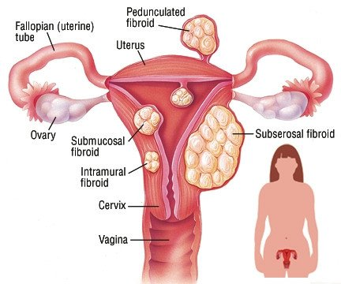

Fibroids

CAUSES
The causes of fibroids are not known. Most fibroids happen in women of reproductive age. They typically aren’t seen in young women who haven’t had their first period yet.
SYMPTOMS
Most fibroids do not cause any symptoms and don’t require treatment other than regular observation by your healthcare provider. These are typically small fibroids. When you don’t experience symptoms, it’s called an asymptomatic fibroid. Larger fibroids can cause you to experience a variety of symptoms, including:
- Excessive or painful bleeding during your period (menstruation).
-
Bleeding between your periods.
-
A feeling of fullness in your lower abdomen/bloating.
-
Frequent urination (this can happen when a fibroid puts pressure on your bladder).
-
Pain during sex.
-
Low back pain.
-
Constipation.
-
Chronic vaginal discharge.
-
Inability to urinate or completely empty your bladder.
-
Increased abdominal distention (enlargement), causing your abdomen to look pregnant.
DIAGNOSIS
These tests can include:
- Ultrasonography: This non-invasive imaging test creates a picture of your internal organs with sound waves. Depending on the size of the uterus, the ultrasound may be performed by the transvaginal or transabdominal route.
-
Magnetic resonance imaging (MRI): This test creates detailed images of your internal organs by using magnets and radio waves.
-
Computed tomography (CT): A CT scan uses X-ray images to make a detailed image of your internal organs from several angles.
Hysteroscopy: During a hysteroscopy, your provider will use a device called a scope (a thin, flexible tube with a camera on the end) to look at fibroids inside your uterus. The scope is passed through your vagina and cervix and then moved into your uterus.
-
Hysterosalpingography (HSG): This a detailed X-ray where a contrast material is injected first and then X-rays of the uterus are taken. This is more often used in women who are also undergoing infertility evaluation.
-
Sonohysterography: In this imaging test, a small catheter is placed transvaginally and saline is injected via the catheter into the uterine cavity. This extra fluid helps to create a clearer image of your uterus than you would see during a standard ultrasound.
-
Laparoscopy: During this test, your provider will make a small cut (incision) in your lower abdomen. A thin and flexible tube with a camera on the end will be inserted to look closely at your internal organs.
TREATMENTS
Treatment for uterine fibroids can vary depending on the size, number and location of the fibroids, as well as what symptoms they’re causing. If you aren’t experiencing any symptoms from your fibroids, you may not need treatment. Small fibroids can often be left alone. Some women never experience any symptoms or have any problems associated with fibroids. Your fibroids will be monitored closely over time, but there’s no need to take immediate action. Periodic pelvic exams and ultrasound may be recommend by your healthcare provider depending on the size or symptoms of your fibroid.If you are experiencing symptoms from your fibroids — including anemia from the excess bleeding, moderate to severe pain, infertility issues or urinary tract and bowel problems — treatment is usually needed to help.